Handbook - Hermaphrodite
Reproductive System Somatic Gonad see also Overview Germ Line Egg-laying Apparatus
4 The spermatheca
Figures 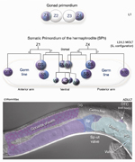SomaticFIG 1 - Development of the somatic gonad, lateral view 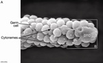SomaticFIG 2A - Scanning electron micrograph of the DTC 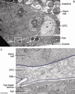SomaticFIG 2B&C - Transmission electron micrograph images of the DTC 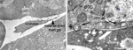SomaticFIG 2D&E - Transmission electron micrograph images of the DTC 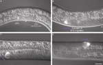SomaticFIG 3A-D - The DTC regulates gonad elongations during develoment 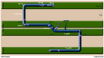SomaticFIG 3E - The stages of gonad arm elongation 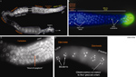SomaticFIG 4 - Distal-proximal polarity of the germ-line cell nuclei morphologies 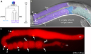SomaticFIG 5A-C - Distal and proximal gonadal sheath cells 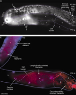SomaticFIG 5D&E - Distal and proximal gonadal sheath cells 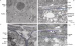SomaticFIG 6 - Electron micrographs of the adult gonadal sheath 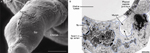SomaticFIG 7 - Electron micrographs of adult gonad 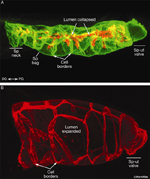SomaticFIG 8A&B - Changes in spermathecal lumen shape and size 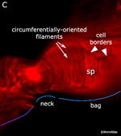SomaticFIG 8C - Spermathecal cells are rich in actin microfilaments 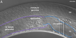SomaticFIG 9A - Formation of the spermatheca 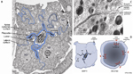SomaticFIG 9B-D - Cell junctions of the spermatheca 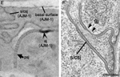SomaticFIG 9E&F - Cell junctions of the spermatheca 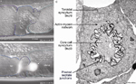SomaticFIG 10 - Spermathecal- uterine valve